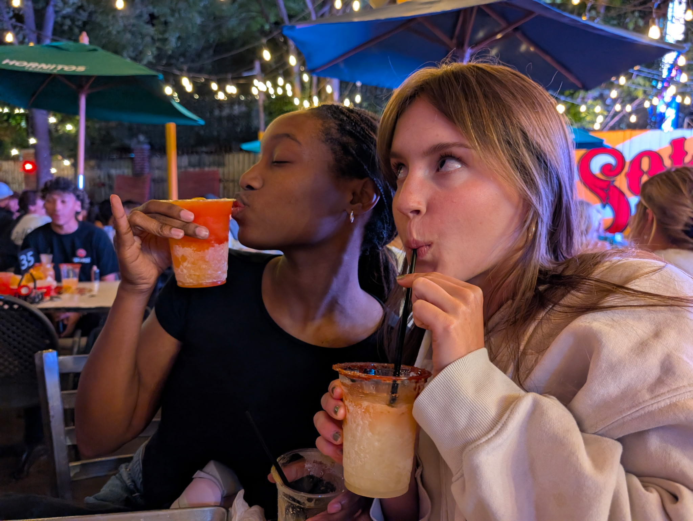

Hello! My name is Brooke Richardson and I am a current third-year UGA Student. I created "My Eats of Athens" as a way to showcase my favorite places to eat and get coffee in Athens, GA. I created this website to share my experiences and recommendations with others who may be visiting or living in the area. I've been living here for a few years now, so I think I've figured out which places are worth going back to. I hope you find it helpful and enjoyable!
